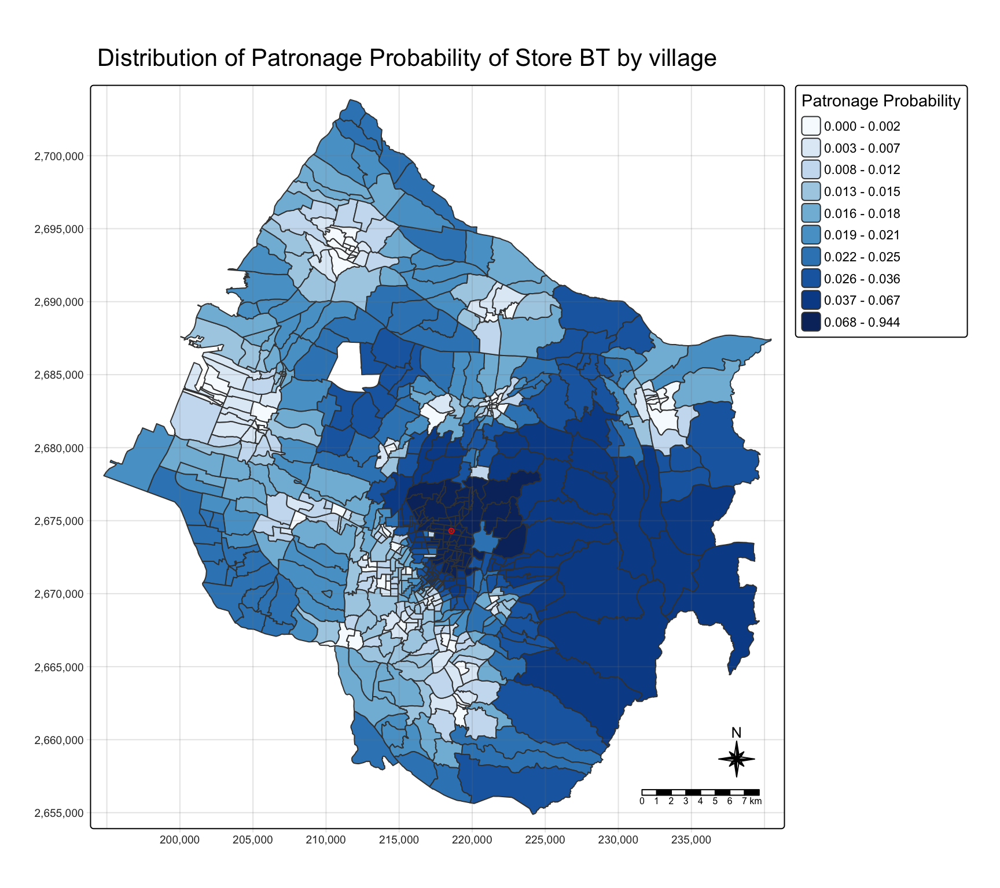
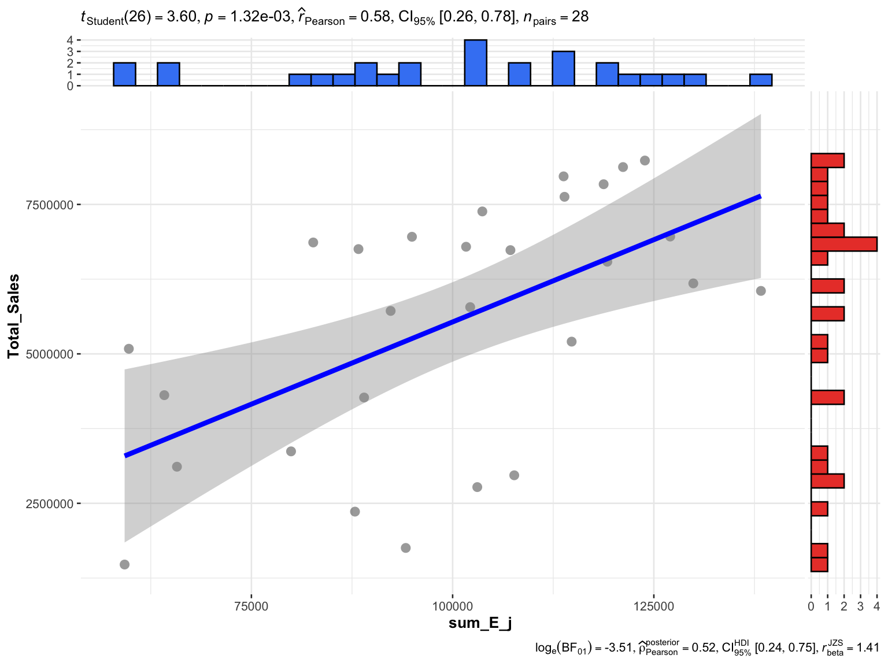
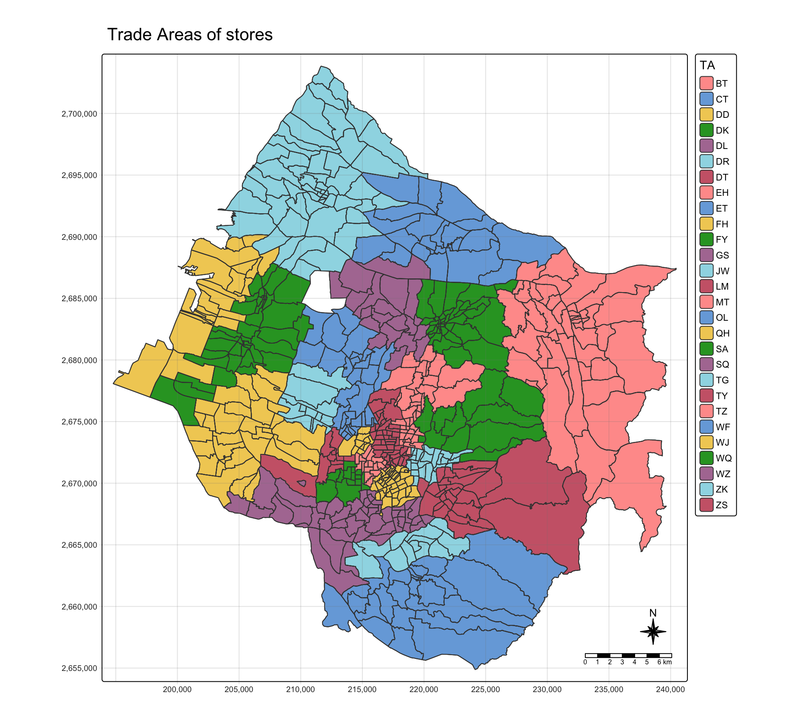
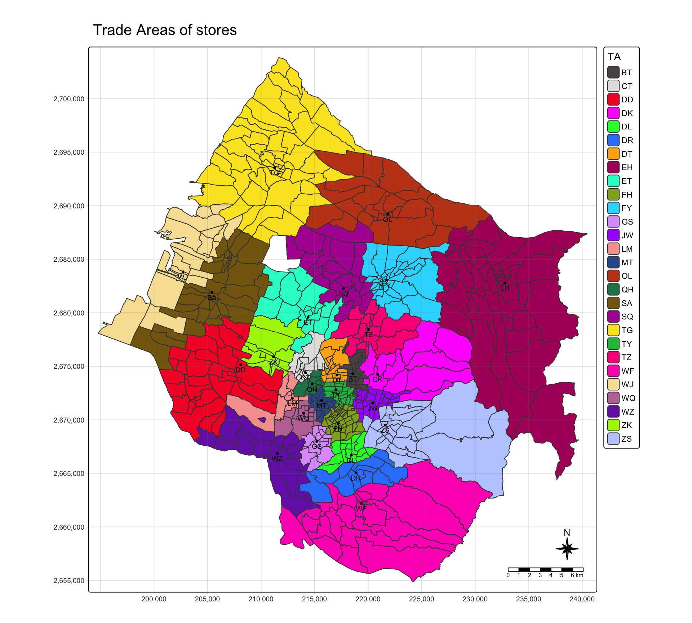

pacman::p_load(sf, tidyverse, MCI, tmap, ggstatsplot)In-class Exercise 8
MARKET AREA ANALYSIS WITH THE HUFF MODEL
R MCI Huff model Trade area Taichung
1. Importing the geospatial data
stores <- st_read(dsn = "data/geospatial", layer = "STORES_TC")Reading layer `STORES_TC' from data source
`/Users/jedidiahasaf/Downloads/Projects/isss626-coursework/In-class_Ex/In-class_Ex08/data/geospatial'
using driver `ESRI Shapefile'
Simple feature collection with 28 features and 3 fields
Geometry type: POINT
Dimension: XY
Bounding box: xmin: 202702.9 ymin: 2662196 xmax: 232773.2 ymax: 2693557
Projected CRS: TWD97 / TM2 zone 121town <- st_read(dsn = "data/geospatial", layer = "TOWN_TC")Reading layer `TOWN_TC' from data source
`/Users/jedidiahasaf/Downloads/Projects/isss626-coursework/In-class_Ex/In-class_Ex08/data/geospatial'
using driver `ESRI Shapefile'
Simple feature collection with 28 features and 7 fields
Geometry type: POLYGON
Dimension: XY
Bounding box: xmin: 194797.1 ymin: 2654887 xmax: 240450.2 ymax: 2703838
Projected CRS: TWD97 / TM2 zone 121village <- st_read(dsn = "data/geospatial", layer = "VILLAGE_TC")Reading layer `VILLAGE_TC' from data source
`/Users/jedidiahasaf/Downloads/Projects/isss626-coursework/In-class_Ex/In-class_Ex08/data/geospatial'
using driver `ESRI Shapefile'
Simple feature collection with 622 features and 10 fields
Geometry type: MULTIPOLYGON
Dimension: XY
Bounding box: xmin: 194797.1 ymin: 2654887 xmax: 240450.2 ymax: 2703838
Projected CRS: TWD97 / TM2 zone 1212. Importing the aspatial data
pop2019 <- read_csv("data/aspatial/pop2019.csv")
store_sales <- read_csv("data/aspatial/Store_sales_data.csv")summary(store_sales) Store Code POD code Bills Amount
Length:5499 Length:5499 Min. : 1.0 Min. : 0
Class :character Class :character 1st Qu.: 37.0 1st Qu.: 26702
Mode :character Mode :character Median : 186.0 Median : 139643
Mean : 331.9 Mean : 236787
3rd Qu.: 457.0 3rd Qu.: 331952
Max. :7764.0 Max. :6076060
Ave Bill
Min. : 0.0
1st Qu.: 661.3
Median : 730.5
Mean : 825.1
3rd Qu.: 862.2
Max. :24356.0 3. Aggregating store sales
store_sales_aggre <- store_sales %>%
group_by(`Store Code`) %>%
summarise(
"Total_Bill" = sum(Bills, na.rm = TRUE),
"Total_Sales" = sum(Amount, na.rm = TRUE))4. Tidying the store data
stores_tidied <- stores %>%
left_join(store_sales_aggre,
by = join_by(
Store_CD == `Store Code`)) %>%
mutate(Store_size = 1) %>%
st_drop_geometry()
summary(stores_tidied) Store_Name Store_Addr Store_CD Total_Bill
Length:28 Length:28 Length:28 Min. : 1767
Class :character Class :character Class :character 1st Qu.: 5698
Mode :character Mode :character Mode :character Median : 8634
Mean : 8021
3rd Qu.:10349
Max. :14468
Total_Sales Store_size
Min. :1475963 Min. :1
1st Qu.:4044821 1st Qu.:1
Median :6116336 Median :1
Mean :5542852 Mean :1
3rd Qu.:6959911 3rd Qu.:1
Max. :8234234 Max. :1 5. Tidying the population data
pop2019 <- pop2019 %>%
mutate(V_ID = str_remove_all(
V_ID, "-"))
village <- village %>%
left_join(pop2019,
by = join_by(
VILLCODE == V_ID))village <- village %>%
filter(!is.na(P_CNT))
c(H_CNT = any(is.na(village$H_CNT)),
P_CNT = any(is.na(village$P_CNT)),
M_CNT = any(is.na(village$M_CNT)),
F_CNT = any(is.na(village$F_CNT)))H_CNT P_CNT M_CNT F_CNT
FALSE FALSE FALSE FALSE 6. Computing the distance matrix
village_center <- st_point_on_surface(village)
distmat <- st_distance(village_center, stores)rownames(distmat) <- village$VILLCODE
colnames(distmat) <- stores$Store_CD
distmat_long <- distmat %>%
as.data.frame() %>%
rownames_to_column(var = "VILLCODE") %>%
pivot_longer(
cols = -VILLCODE,
names_to = "Store_CD",
values_to = "distance") %>%
mutate(distance = as.numeric(distance))7. Building the interaction matrix
ijMatrix <- distmat_long %>%
left_join(
stores_tidied %>%
select(Store_CD, Store_size),
by = "Store_CD") %>%
relocate(
distance, .after = last_col())village_tidied <- village %>%
select(VILLCODE, H_CNT, P_CNT) %>%
mutate(HH_SIZE = P_CNT / H_CNT) %>%
st_drop_geometry()ijMatrix <- ijMatrix %>%
left_join(
village_tidied,
by = "VILLCODE") %>%
relocate(
HH_SIZE, .after = last_col())
glimpse(ijMatrix)Rows: 17,276
Columns: 7
$ VILLCODE <chr> "66000110029", "66000110029", "66000110029", "66000110029",~
$ Store_CD <chr> "TY", "DL", "BT", "JW", "DD", "LM", "FY", "SA", "GS", "TZ",~
$ Store_size <dbl> 1, 1, 1, 1, 1, 1, 1, 1, 1, 1, 1, 1, 1, 1, 1, 1, 1, 1, 1, 1,~
$ distance <dbl> 28066.502, 34344.784, 27046.407, 30238.546, 25079.795, 2820~
$ H_CNT <dbl> 481, 481, 481, 481, 481, 481, 481, 481, 481, 481, 481, 481,~
$ P_CNT <dbl> 1725, 1725, 1725, 1725, 1725, 1725, 1725, 1725, 1725, 1725,~
$ HH_SIZE <dbl> 3.586279, 3.586279, 3.586279, 3.586279, 3.586279, 3.586279,~8. Computing the Huff model
huff_share <- huff.shares(
ijMatrix, "VILLCODE", "Store_CD",
"Store_size", "distance")9. Trade area of store BT
market_share <- huff_share %>%
filter(Store_CD == "BT")
Trade_area <- village %>%
left_join(market_share)
selected_store <- stores %>%
filter(Store_CD == "BT")tm_shape(Trade_area) +
tm_polygons(fill = "p_ij",
fill.scale = tm_scale_intervals(
style = "quantile",
n = 10,
values = "brewer.blues"),
fill.legend = tm_legend(
title = "Patronage Probability")) +
tm_shape(selected_store) +
tm_dots(size = 0.3,
fill = "red",
col = "black") +
tm_title("Distribution of Patronage Probability of Store BT by village") +
tm_layout(frame = TRUE) +
tm_borders(fill_alpha = 0.5) +
tm_compass(type = "8star", size = 2) +
tm_scalebar() +
tm_grid(alpha = 0.2)
10. Estimating store sales
huff_share_pp <- huff_share %>%
relocate(
distance, .after = last_col())
huff_total <- shares.total(
huff_share_pp, "VILLCODE", "Store_CD",
"p_ij", "P_CNT")store_sales_est <- stores %>%
left_join(store_sales_aggre,
by = join_by(Store_CD == `Store Code`)) %>%
left_join(huff_total,
by = join_by(
"Store_CD" == "suppliers_single"))store_sales_nongeom <- store_sales_est %>%
st_drop_geometry()
ggscatterstats(
store_sales_nongeom,
x = sum_E_j,
y = Total_Sales)
11. Delineating the trade areas
huff_share_wider <- huff_share %>%
select(VILLCODE, Store_CD, p_ij) %>%
pivot_wider(names_from = Store_CD,
values_from = p_ij)huff_TA <- huff_share_wider %>%
mutate(
TA = names(pick(2:29))[
max.col(pick(2:29),
ties.method = "first")])huff_TA_tidied <- huff_TA %>%
select(VILLCODE, TA)
village_TA <- village %>%
left_join(huff_TA_tidied,
by = join_by(VILLCODE))12. Mapping the trade areas
tm_shape(village_TA) +
tm_polygons(fill = "TA") +
tm_title("Trade Areas of stores") +
tm_layout(frame = TRUE) +
tm_borders(fill_alpha = 0.5) +
tm_compass(type = "8star", size = 2) +
tm_scalebar() +
tm_grid(alpha = 0.2)
13. Trade areas with one colour per store
tm_shape(village_TA) +
tm_polygons(fill = "TA",
fill.scale = tm_scale_categorical(
values = "poly.palette36")) +
tm_shape(stores) +
tm_dots(size = 0.2,
fill = "black") +
tm_text("Store_CD",
size = 0.6,
ymod = -0.6) +
tm_title("Trade Areas of stores") +
tm_layout(frame = TRUE) +
tm_compass(type = "8star", size = 2) +
tm_scalebar() +
tm_grid(alpha = 0.2)